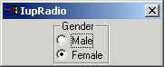

Creates the radio element for grouping mutual exclusive toggles. Only one of its descendet toggles will be active at a time. The toggles can be at any composion.
Ihandle* IupRadio(Ihandle *element); [in C] iup.radio{element: ihandle} -> (elem: ihandle) [in Lua] radio(element) [in LED]element: Identifier of an interface element. Usually it is a vbox or an hbox containing the toggles associated to the radio.
This function returns the identifier of the created radio, or NULL (nil in IupLua) if an error occurs.
VALUE: Identifier of the active toggle. The identifier is set by means of
IupSetHandle.
